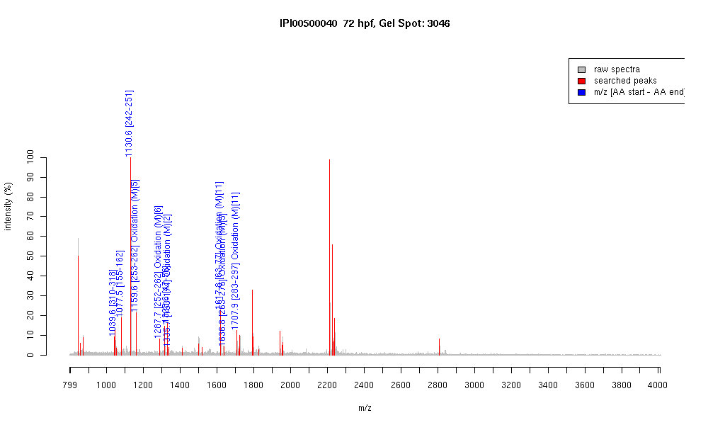

IPI00500040 :: Gel Spot=3046
| Name | "Tubulin, beta, 2" |
|---|
| MW | 49755 |
|---|
| PI | 4.79 |
|---|
| Mascot Protein Score | 108 |
|---|
| Masses (matched / unmatched) | 10 / 29 |
|---|

| Peptide | MZ (calc) | MZ (observed) | Error (DA) | Error (PPM) | Start | Stop | Modifications |
|---|
| YLTVAAVFR | 1039.5935 | 1039.5837 | -0.0098 | -9 | 310 | 318 | |
| IREEYPDR | 1077.5323 | 1077.5317 | -0.0006 | -1 | 155 | 162 | |
| FPGQLNADLR | 1130.5953 | 1130.5974 | 0.0021 | 2 | 242 | 251 | |
| LAVNMVPFPR | 1159.6292 | 1159.6288 | -0.0004 | 0 | 253 | 262 | Oxidation (M)[5] |
| KLAVNMVPFPR | 1287.7241 | 1287.7224 | -0.0017 | -1 | 252 | 262 | Oxidation (M)[6] |
| INVYYNEATGGK | 1328.6481 | 1328.6422 | -0.0059 | -4 | 47 | 58 | |
| IMNTFSVVPSPK | 1335.6978 | 1335.6997 | 0.0019 | 1 | 163 | 174 | Oxidation (M)[2] |
| AVLVDLEPGTMDSVR | 1617.8152 | 1617.8137 | -0.0015 | -1 | 63 | 77 | Oxidation (M)[11] |
| LHFFMPGFAPLTSR | 1636.8304 | 1636.8252 | -0.0052 | -3 | 263 | 276 | Oxidation (M)[5] |
| ALTVPELTQQMFDAK | 1707.8622 | 1707.8635 | 0.0013 | 1 | 283 | 297 | Oxidation (M)[11] |